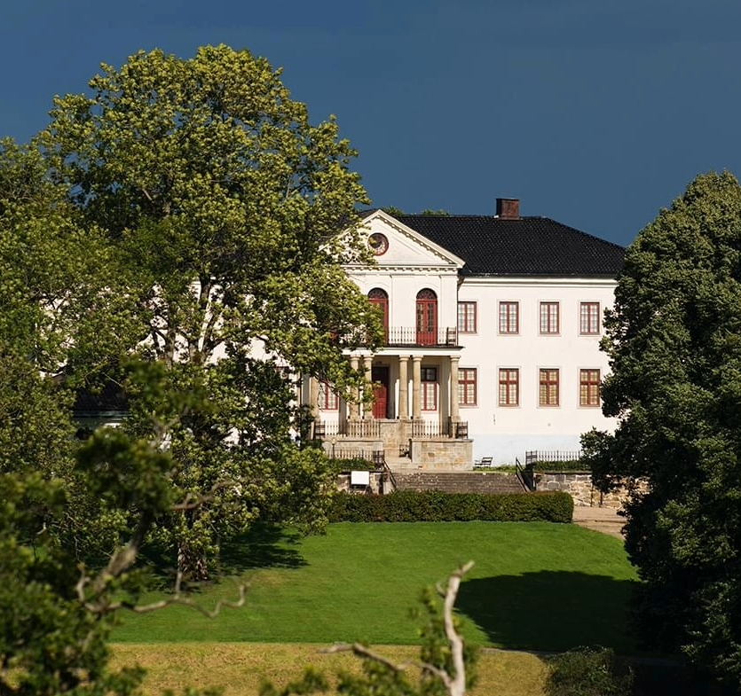
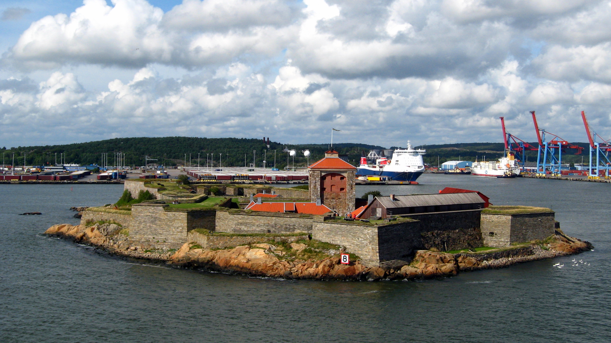

Utflyktskompassen



Om oss
Utflyktskompassen hjälper dig hitta spännande utflyktsmål runt Göteborg. Vi vill inspirera till äventyr i naturen genom att samla tips på vandringar, sevärdheter och natursköna platser. Oavsett om du är nybörjare eller erfaren utforskare

Varför vi gör detta
Vi vill göra det enklare för alla att komma ut i naturen och upptäcka nya platser. Vår ambition är att sprida utflyktsglädje och lyfta fram både populära och gömda pärlor i närområdet. Naturen är till för alla — låt oss hjälpa dig att hitta din nästa favoritplats!